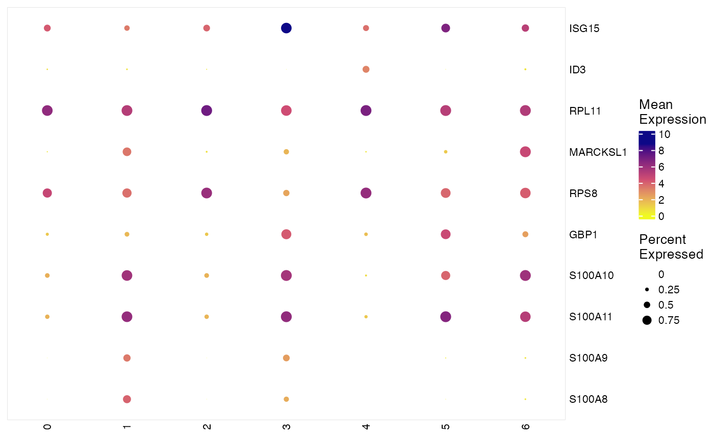
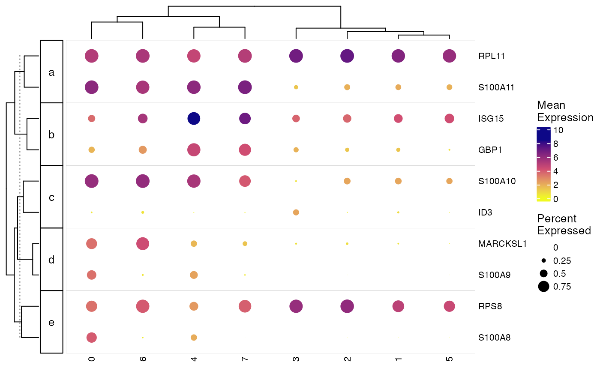

This function produces dot plots. Each column represent a group
of cells specified by groupBy, each row is a gene specified by
features. The color of dots reflects mean of normalized expression of
specified genes in each cell group and sizes reflects the percentage of cells
expressing each gene in a group. We utilize
ComplexHeatmap
for simplified management of adding annotation and slicing subplots. This was
inspired by the implementation in
scCustomize.
plotClusterGeneDot(
object,
features,
groupBy = "leiden_cluster",
splitBy = NULL,
featureScaleFunc = function(x) log2(10000 * x + 1),
cellIdx = NULL,
legendColorTitle = "Mean\nExpression",
legendSizeTitle = "Percent\nExpressed",
viridisOption = "magma",
verbose = FALSE,
...
)A liger object
Character vector of gene names object. Alternatively,
a data.frame where the first column is gene names and second column is
grouping variable (e.g. runWilcoxon output, recommended to be row
subset).
The names of the columns in cellMeta slot storing
categorical variables. Expression data would be aggregated basing on these,
together with splitBy. Default "leiden_cluster".
The names of the columns in cellMeta slot storing
categorical variables. Dotplot panel splitting would be based on these.
Default NULL.
A function object applied to normalized data for
scaling the value for better visualization. Default function(x)
log2(10000*x + 1)
Valid cell subscription. See subsetLiger.
Default NULL for using all cells.
Title for colorbar legend. Default
"Mean\nExpression".
Title for size legend. Default
"Percent\nExpressed"
Name of available viridis palette. See
viridis. Default "magma".
Logical. Whether to show progress information. Mainly when
subsetting data. Default FALSE.
Additional theme setting arguments passed to
.complexHeatmapDotPlot and heatmap setting arguments passed to
Heatmap. See Details.
HeatmapList object.
For ..., please notice that arguments colorMat,
sizeMat, featureAnnDF, cellSplitVar, cellLabels
and viridisOption from .complexHeatmapDotPlot are
already occupied by this function internally. A lot of arguments from
Heatmap have also been occupied: matrix,
name, heatmap_legend_param, rect_gp, col, layer_fun, km, border, border_gp,
column_gap, row_gap, cluster_row_slices, cluster_rows, row_title_gp,
row_names_gp, row_split, row_labels, cluster_column_slices, cluster_columns,
column_split, column_title_gp, column_title, column_labels, column_names_gp,
top_annotation.
data("pbmcPlot", package = "rliger2")
# Use character vector of genes
features <- varFeatures(pbmcPlot)[1:10]
plotClusterGeneDot(pbmcPlot, features = features)

# Use data.frame with grouping information, with more tweak on plot
features <- data.frame(features, rep(letters[1:5], 2))
plotClusterGeneDot(pbmcPlot, features = features,
clusterFeature = TRUE, clusterCell = TRUE, maxDotSize = 6)
